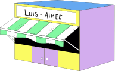

Bienvenue dans le monde de terre de lien
Pour vous déplacer dans le jeux vous pourrez
vous deplacer en cliquant et glissant votre curseur.
Vous devrez trouvez ces agriculteurs pour qu’ils
vous racontent leurs histoires.
Besoin de se rafraîchir la mémoire trouver la
cabane elle vous redonnera les consignes

Bien vu, vous avait reussir a voir la difference entre la monoculture et la culture diverse et organic.
On s'appelle Geert et Myriam
Grâce à Terre de liens nous pouvons cultiver des légumes.
Bien vu, vous avait reussir a voir la difference entre la monoculture et la culture diverse et organic.
Je m’appelle Antoine
Grâce à terre de liens de je peux faire de la viticulture.
Bien vu, vous avait reussir a voir la difference entre la monoculture et la culture diverse et organic.
Je m’appelle Antoine
Grâce à terre de liens de je peux faire de la viticulture.
Bien vu, vous avait reussir a voir la difference entre la monoculture et la culture diverse et organic.
Je m’appelle Antoine
Grâce à terre de liens de je peux faire de la viticulture.